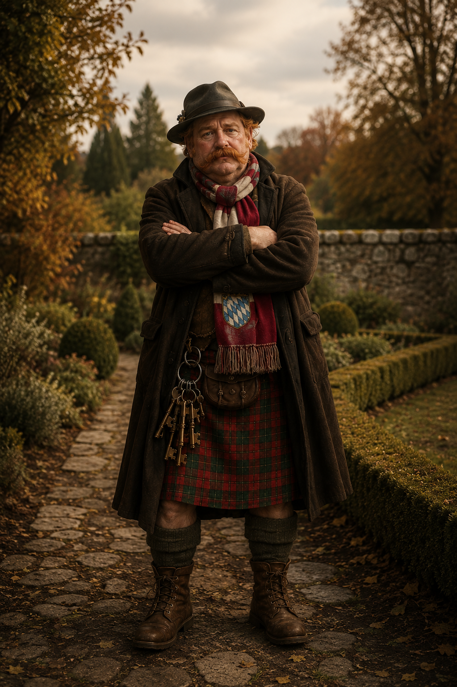
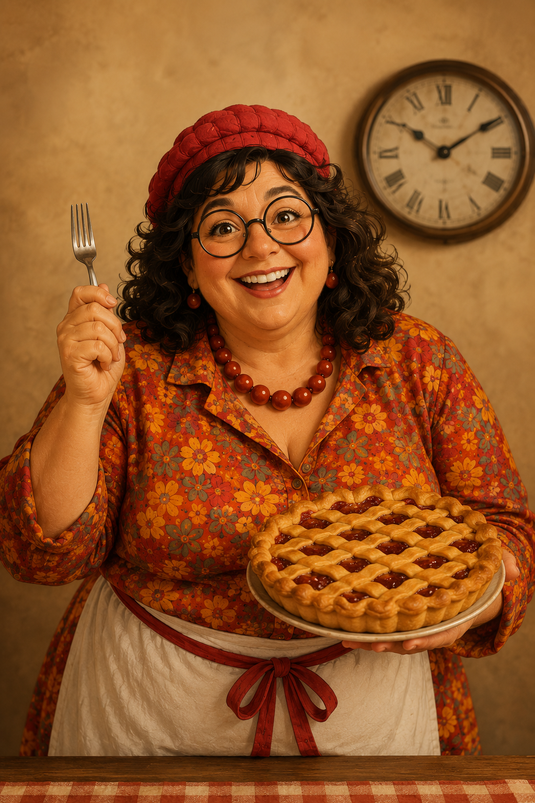
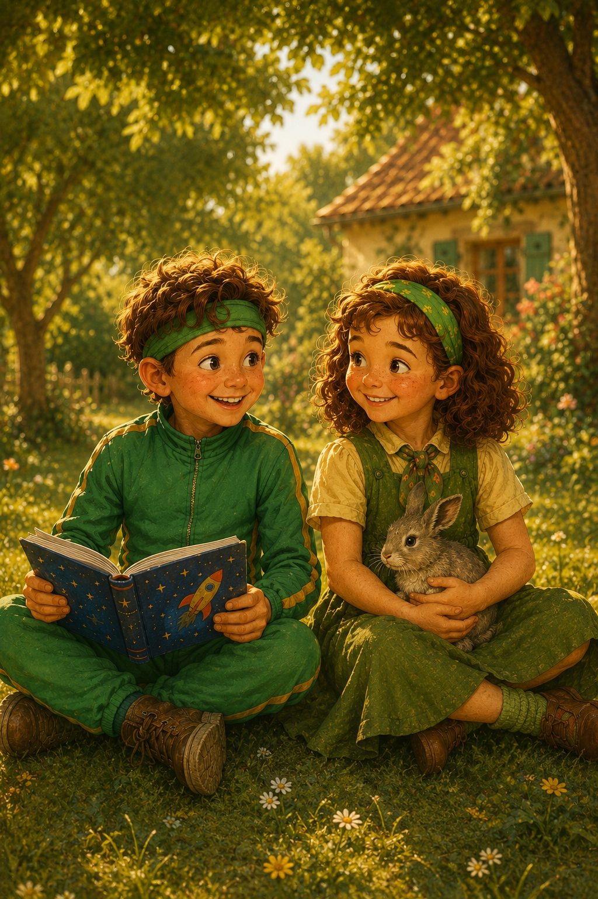
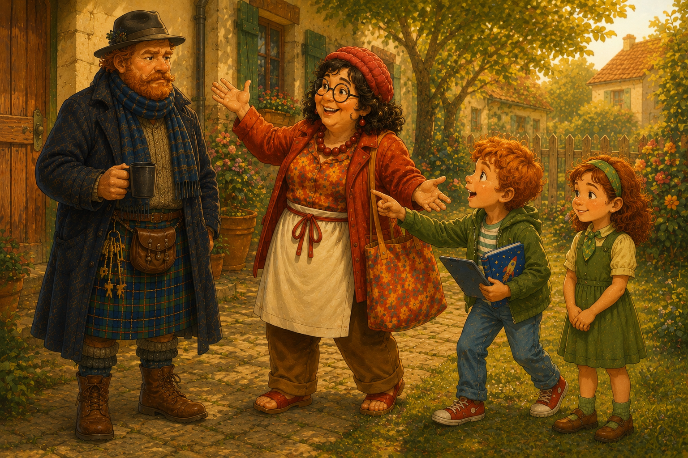
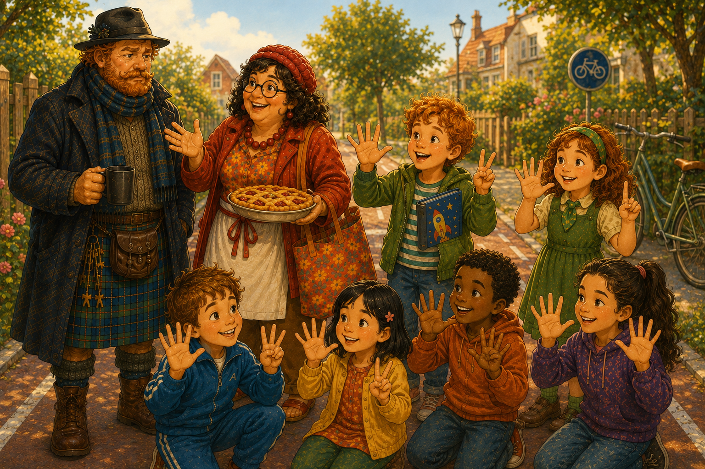
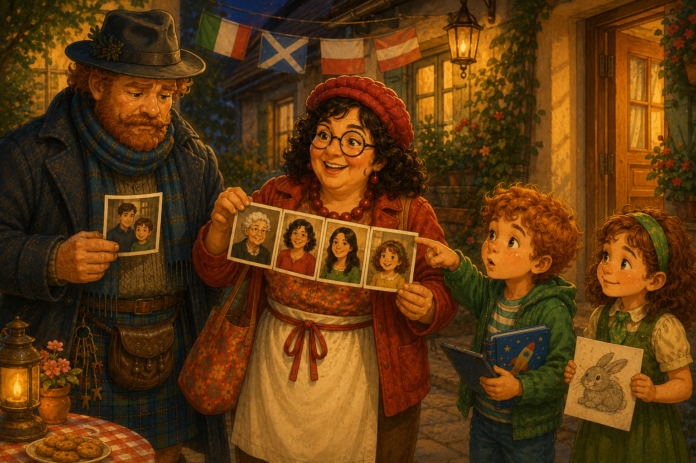

Тема 1 — Знакомство и семья
Научись рассказывать о себе и о семье: имя, происхождение, профессия, родные. Кликни род — попадёшь в сцену с историей, картинкой и озвучкой. L1 L2 L3
Существительные — по роду

der Otto любит слова только с der
NameVornameFamiliennameHerrBerufJobSinglePartnerWohnortFamilienstandMomentGärtnerLehrerArztTierarztIngenieurArchitektStudentJournalistFriseurVerkäuferKellnerSchülerRentnerSchauspielerSängerVaterPapaBruderSohnOnkelGroßvaterEnkelEhemannVerwandteMann
▶ Начать изучение →

die Грета только с die
FrauFamilieMutterMamaSchwesterTochterOmaGroßmutterEnkelinEhefrauTanteVerwandteNationalitätHerkunftSpracheAdresseStraßeHausnummerPostleitzahlStadtTelefonnummerNummerE-MailVisitenkarteInformationListeZahlMusikKöchinSängerinÄrztinFriseurinVerkäuferinLehrerinStudentinKrankenschwesterRentnerinPartnerinFirmaStelleAusbildung
▶ Начать изучение →

das Тео и Lina только с das
KindMädchenJahrAlterLandGesprächAlphabetInterviewRätselStudiumPraktikumTierFestEnkelkindDatumGeburtsdatumMitglied
▶ Начать изучение →
Нажми на слово — покажется перевод. Только мн.ч.: die Eltern · die Geschwister · die Großeltern. ↳ Подраздел «Множественное число» — скоро.
Глаголы — открыть раздел →
прав. Правильные (слабые)
непр. Неправильные (особые)
Нажми на глагол — перевод; на ▾ — спряжение по местоимениям и прошедшее (Perfekt). прав. по правилу · непр. особый.
Другое — по теме (фразы, прилагательные, наречия)
Прилагательные / состояния
altverheiratetgeschiedenalleinrichtigfalsch
Фразы
… Jahre altvon Berufein bisschengar nichtWie geht’s?Nicht so gutvielen DankGuten TagAuf Wiedersehen
Наречия / служебные
jetztzusammenhierauchausbeialsinwowoherwerwiewelcheaberund
Да / нет / отрицание
janeindochkein / keinemeindein
📖
Словарь темы 1 — все слова
Все слова темы с переводом, озвучкой и самопроверкой (глазик). der/die/das + глаголы.
🔍 Открыть словарь →
Тексты по теме (диалоги · все рода)
Закрепляющие диалоги: Otto, Грета и дети знакомятся — рода вперемешку. Читай немецкий → русский, отвечай на вопросы и закрепляй слова.

Текст 1 — Знакомство во дворе
Имена, откуда родом, как дела (L1)
Читать →
Текст 2 — Кто кем работает
Профессии, возраст, числа (L2)
Читать →
Текст 3 — Семья и языки
Родня, на каких языках говорят (L3)
Читать →Структура темы: существительные по роду (3 персонажа) + глаголы + другое + тексты — всё по теме, в одном месте. Лексика сверена по Lernwortschatz (Arbeitsbuch).